在写战报之前先做几点说明。
所谓悠妮单通，就是其他队员0经验，只练悠妮一人通全30关；其余队员允许的操作有以下几点：补血，捡箱子以及阻挡敌人，而使用道具作用于敌人（比如暗之眼）是禁止的。另外，队员一旦阵亡就不再复活。
既要过关，又要保护索尔，这使得某些关变得相当困难。玩过之后感觉有如下几个难关（难度用星号标记）：
1.第二关全救村民。因为悠妮的出场位置是最靠下的。（***）
2.第三关救铁诺。其实不救也可以，对后面没太多影响。（***）
3.第四关捡箱子。悠妮学不到麻痹术，如何捡箱子需要些技巧。（想不到就是****，想到的话就没难度）
4.第十一关抢到星之眼之后回救索尔。（****）
5.第十五关抢光之眼和保护赛可邦勒。同样需要技巧。（想不到就是*****，想到的话就是**）。
6.第二十一关。有惊无险。（***）
7.第二十二关。既要保护索尔和希尔法，又要为后面二十四关考虑，不能牺牲队员，如何对付下面的恶魔是难点。（****）
8.第二十四关。悠妮单通的最难关。（*****）
第一关
悠妮先用火炎术升一级，之后给老爹穿上皮甲堵路练级。别忘了最后亚雷斯去捡钱。
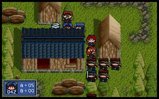
第二关。
索尔和亚雷斯穿皮甲。援军出现时需要亚雷斯miss一下，之后就不靠运气了。
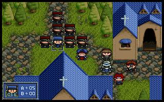
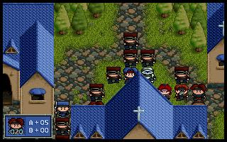
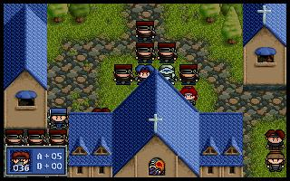
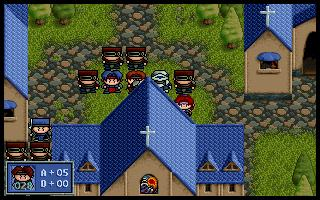
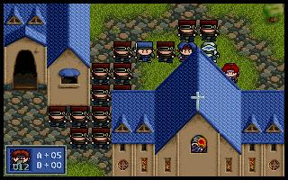
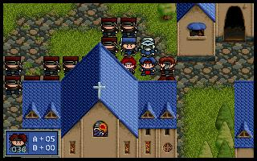
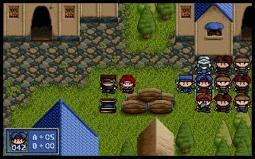
第三关
悠妮买钉头槌，穿布衣，一路敲打上去（不用魔法共杀掉3兽人：）
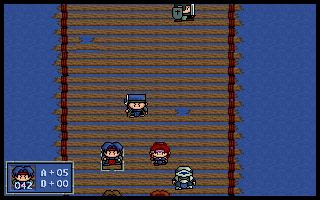
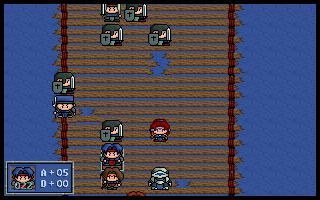
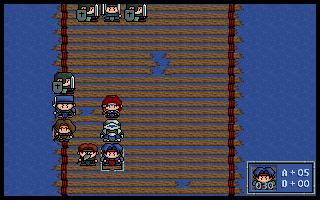
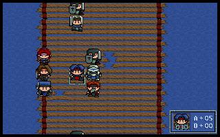
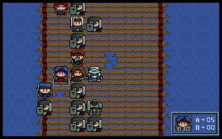
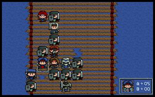
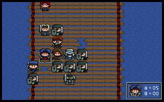
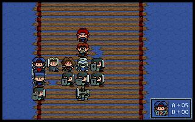
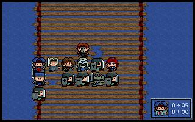
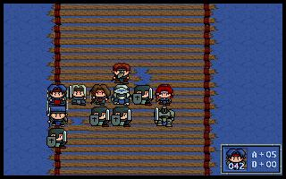
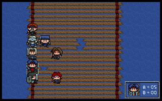
第四关
秘诀就在于左下的兽人被挤开了：）
铁诺可以扛住兽人一击，此时烧掉一个法师的悠妮刚好回来秒掉下面的兽人，这样，左下的兽人就不动了。悠妮可以从容练级和之后的捡箱子。（地方有限，只好牺牲哈诺了）
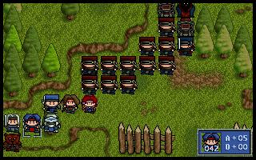
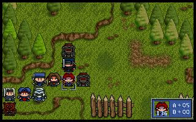
第五关
悠妮先上去抢钱，之后向左去杀将出来的兽人；亚雷斯捡左侧箱子；玛琳向下，其他人在下面站位等待兽人。兽人出，悠妮解决一个然后奔下；下面玛琳和铁诺站位，截住两兽人退路。之后悠妮奔回来杀兽人堵口。因为右侧漏下来一个僧侣，导致仅余铁诺存活。总共杀掉3兽人：）
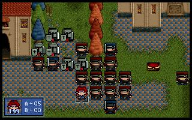
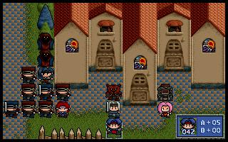
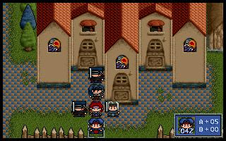
第六关
简单。
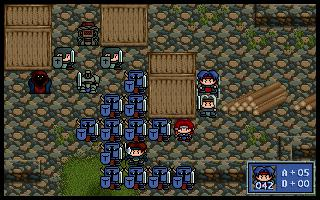
第七关
简单。
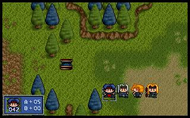
第八关
简单。
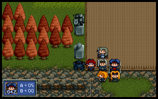
第十关
第九关简单不提了。第十关悠妮从右上（因为右边有个人身上有生命之实），简单。
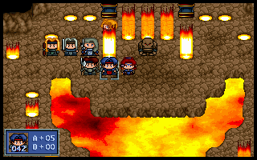
第十一关
悠妮向下奔星之眼，莱汀抢钱箱，洛娜捡完圣之枪直奔力量药水，凯丽奔中间的钱箱，索尔和贝克威领着珊奔右上，其他人站位吸引火力。悠妮抢完星之眼后从右侧回援索尔。因为路口大，悠妮要麻痹和炎龙术结合着用，通关。
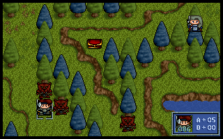
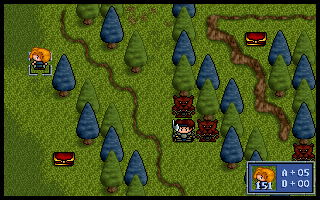
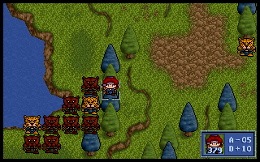
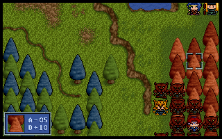
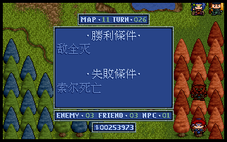
第十二关
悠妮尽量向前冲，有贝克威吸引米亚斯多德，通关变得很轻松。
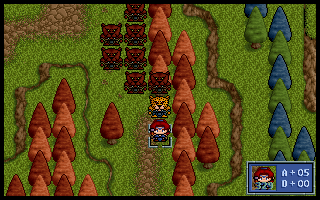
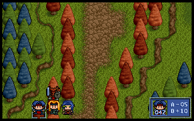
第十三关
不需要救4个精灵，本关就变得简单了。悠妮的麻痹和炎龙术再次显出了威力。此关用米亚斯多德堵住拿星之眼的兽人，给悠妮争取时间。
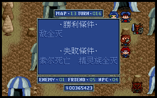
第十四关
悠妮穿布衣，护着大家从闪电锤处跑到左下安全地方，然后自己杀。
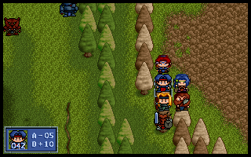
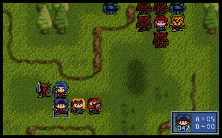
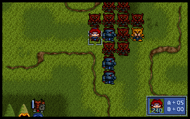
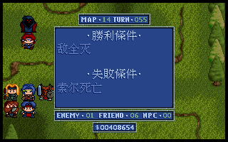
第十五关
同样是单通，悠妮突破路口有别于索尔，因为兽人首领和战士加攻击后会攻击穿着精灵披风的未转职悠妮，但悠妮又不能秒杀敌人，减缓了前进的速度；另外，抢光之眼也是一大难处，因此本关需要一个技巧，就是用米亚斯多德迂回过去站在兽人逃离地图的那一点上，逃跑的兽人不会攻击，这样就给悠妮很大的自由度，使通关简单。附带说一句，拿光之眼的兽人和拿力量药水的是同一个逃离点：）
穿着布衣的悠妮按照图示走位突破路口：
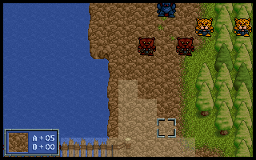
攻击战士，使得僧侣补血而不用封咒：
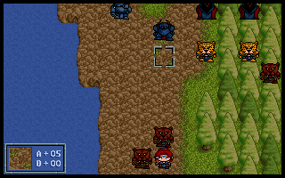
路口的射手傻傻的绕到上面攻击悠妮，此时悠妮换精灵披风突破，敌人不再追赶。米亚斯多德也急急上行，注意要在射手攻击范围之外：
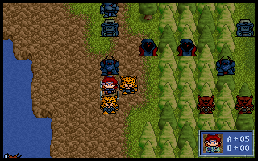
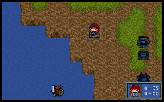
米亚斯多德到达目的地：
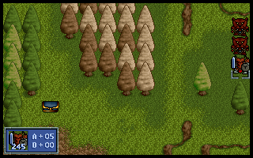
悠妮救下豹人后换上布衣直扑boss，轻松搞定：
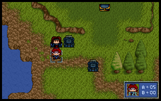
第十六关
转职的悠妮过了本关，进入showtime：）买了53个力量药水，从本关开始吃起。
第十八关
有了传送，第十七关太简单，不写了。第十八关悠妮先向右炽天使，杀得非常快。之后回撤左方如图位置；而索尔领着约拿向右远一点地方；珊和两个龙人到左下角待着。援兵出，悠妮轻松搞定。
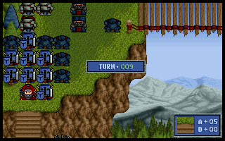
第十九关及二十关
简单。
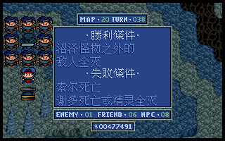
第二十一关
约拿放左边，悠妮（拿着链枷）和三条龙放右边。
第一回合，悠妮杀掉法师，3条龙往高台飞。
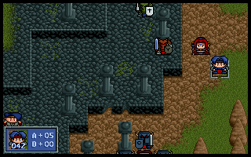
第二回合，传送索尔上高台，之后悠妮狂奔。
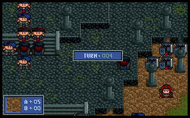
悠妮杀敌的一刻：
最后：
第二十二关
本关精简人员，只出场巴拿罗西亚。战术思路是：悠妮先传送索尔和希尔法上高台，巴拿罗西亚到中央把两边骑兵吸引过来（我还吸引了中间的一个骑兵），这样清理后空地才安全。之后悠妮再把两人传下来，然后就可以安心对付下面的恶魔了。其间巴拿罗西亚和莎拉吸引恶魔以拖延一回合时间。
第二十四关
第二十三关简单，不提。第二十四关……倾尽全部高级队员。卡里斯和赛可邦勒需要交换护甲，悠妮先穿布衣。悠妮先捡风精之羽，然后向左；莎拉、米亚斯多德和凯拉斯向右耗掉恶魔全部魔法点，只有莎拉生还；悠妮耗掉左方恶魔魔法点，并杀掉两大恶魔，之后奔右，所有人站方阵，注意四角处要放高等级人物。此时悠妮换地之袍（二十三关没去捡天之袍）。
最后两个骑兵即将死去。此后悠妮以最快速度电光周围全部敌人。
第十二回合。莎拉和巴拿罗西亚分向上下耗恶魔魔法点，并且拖延法师进程；卡里斯向左消耗左下恶魔魔法点，并拖延法师进程。
第十三回合。悠妮电死上方法师捎带两战士，卡里斯回撤到刚好左下魔法师和另一恶魔的魔法范围，兰斯洛特向右上消耗两恶魔魔法点，并拖延法师进程（需要他miss一次）。其余人换位离开恶魔魔法范围。
第十四回合。悠妮电死右下魔法师，卡里斯向右靠拢。
第十五回合。悠妮电死左边两个魔法师，莎拉向上，卡里斯补位。从此无忧矣：）
第二十五关
简单。
第二十六关
悠妮穿布衣向上，反击死左右战士，再向上吸引龙骑士，清理光左上方龙骑后，索尔和亚齐梅吉开始向左移动，之后就安全了。
第三十关
二十七关到二十九关均可以传送索尔到安全地方，不提。第三十关也是，截两张图留念。
|